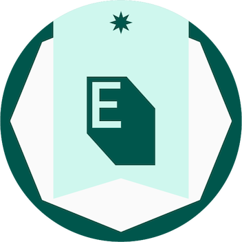

About
I'm Greg Mitchell, a data partnerships and technical integrations leader. I've spent 14 years in adtech, identity, data, and martech, usually in the space between the business side and the engineering side. Most recently I led data partnerships and integrations at Path2Response, including the work that put the company's first-party data in the LiveRamp marketplace. Before that I ran a 13-person analytics and data engineering team at Spark Foundry, set up the client-facing solutions function at Aqfer, and spent seven years on measurement and attribution for automotive clients at Korrelate and J.D. Power.
I also build software on my own time, which keeps me close to the technical details I'm asking partners and engineers to deal with. These days most of it involves AI: I build with Cursor and try the newest models on OpenRouter as they come out to see what they're actually good at.
Experience
Director, New Initiatives · Path2Response
Led partner integrations, data distribution, and go-to-market work for a first-party data and direct mail co-op.
- Guided the integration of the company's first-party dataset into the LiveRamp marketplace, opening distribution to more than 50 DSPs and audience platforms and creating a new revenue channel.
- Managed eight data and technology partners, including Merkle/4Cite, Zeta, Skydeo, El Toro, Wunderkind, and Visual Visitor, from evaluation and technical scoping through contracts, launch, and ongoing management. Partner-sourced data volume nearly doubled over two years.
- Created and maintained audience segments in LiveRamp for activation in The Trade Desk, Google DV360, Yahoo DSP, MNTN, and StackAdapt, and expanded distribution through Skydeo (including Meta) and Eyeota.
- Cut client onboarding from more than seven days to one business day with a redesigned process, automation, and clearer ownership.
- Owned partner and client escalations, including root-cause analysis and resolution.
- Built internal tools with Cursor and OpenRouter, including a pixel-monitoring tool for tag operations.
- Hired and mentored three team members.
Director of Analytics · Spark Foundry
Led a 13-person remote team handling analytics, data engineering, infrastructure, and measurement for a large pharmaceutical client.
- Was the senior relationship lead across client, media, analytics, and engineering stakeholders, covering executive communication, quarterly business reviews, and escalations.
- Led the migration from fragmented legacy systems to a centralized AWS environment, which improved reliability, scalability, and measurement.
- Used Airflow and Python to process raw record-level data into aggregated Amazon Redshift datasets for Tableau and other BI tools.
- Built repeatable onboarding, delivery, and documentation processes that made the team easier to scale.
- Hired and mentored team members and helped four direct reports earn AWS certifications.
Solutions Engineering Manager · Aqfer
Early-stage enterprise data platform serving adtech and martech use cases. Established the client-facing solutions function.
- Led solution design and relationship management for 12 enterprise clients, including Acxiom, U.S. Bank, MLB, and Vevo.
- Ran client discovery and solution scoping as the technical lead, translating business needs into technical requirements.
- Designed client-specific data integration workflows and worked with engineering to turn recurring needs into reusable product capabilities.
- Wrote SQL, including CTAS queries, to extract platform data and produce flat-file outputs for clients.
- Set up delivery processes, ticketing, and QA standards that let the team grow without adding headcount at the same pace.
Data Operations Engineer · Goodway Group
- Automated SQL transformations of raw advertising platform and third-party data into summary datasets in Amazon Redshift, orchestrated with Apache Airflow.
- Worked directly with clients on website tagging and data collection to improve attribution accuracy and reporting quality.
- Built Tableau dashboards and used SQL and Python for campaign analytics, operational reporting, and data quality fixes.
Lead Data Analyst & Solutions Manager · Korrelate / J.D. Power
Korrelate was a marketing measurement startup. Joined during its early-stage growth and remained through the 2014 acquisition by J.D. Power. Managed measurement and attribution engagements for more than 30 automotive clients, including tier-1 manufacturers and dealer groups.
- Worked on Korrelate's patented double-blind matching system, an early version of what the industry now calls a clean room, which connected online advertising and website activity to vehicle purchases while keeping consumer identities private.
- With no playbook yet for using this kind of data, designed the client-facing outputs from scratch so the results were easy to understand and act on.
- Turned each client's results into monthly executive summaries that leadership could read quickly and use.
- Served as the primary relationship owner for enterprise automotive accounts, turning business goals into technical measurement solutions.
- Managed tracking pixel implementations across OEM and dealer websites, coordinating clients, advertising partners, analytics, and engineering.
- Ran test vs. control analyses to measure campaign impact.
Independent Projects
FiresideSender
firesidesender.com ↗A B2B SaaS platform I'm building on my own. It covers website visitor identity resolution, email warming and deliverability, cold outreach, and DNS/DMARC monitoring. Built with Node.js, React, PostgreSQL, AWS, Stripe, and OpenRouter. Working on it keeps me hands-on with the same kinds of systems I deal with in data partnerships.
Credit Put Spread Garage
creditputspreadgarage.com ↗A daily options screener I built for credit put spreads. It scores setups on measures like IV rank and trend strength, has an AI model write up the reasoning for each idea, posts new ideas on a schedule through the trading day, and tracks how they perform over time. Built with Node.js, Express, PostgreSQL, node-cron, and Puppeteer, pulling market data from Alpaca and Yahoo Finance and running the AI analysis through DeepInfra.
UncRetro
uncretro.com ↗A no-login retrospective board for agile teams, with real-time collaboration, AI-generated summaries, and several board types. Built with Node.js, Socket.io, OpenRouter, and PostgreSQL.
Startup Programs
Six-week founder program covering market analysis, sales strategy, operations, and financial forecasting, ending with a pitch.
Went through StarterStudio's 2020 incubator cohort with PixelCrawler, my SaaS project for auditing, monitoring, and keeping a history of the tracking pixels on a website.
Certifications

Data-Driven Planning The Trade Desk Edge Academy Marketing Essentials The Trade Desk Edge Academy Digital Product Management: Modern Fundamentals UVA Darden School of Business via Coursera